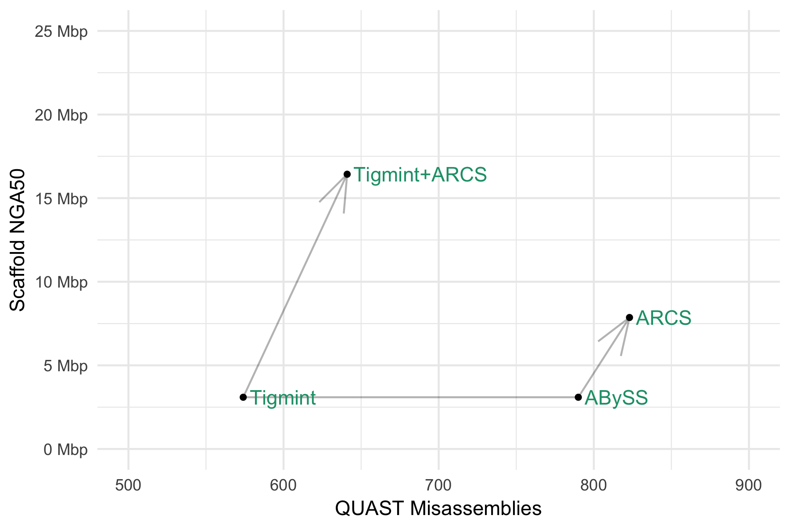

Tigmint
Correcting Misassemblies Using Linked Reads From Large Molecules
Shaun Jackman @sjackman
Lauren Coombe, Justin Chu, Rene L Warren, Benjamin P Vandervalk, Sarah Yeo, Zhuyi Xue, Hamid Mohamadi, Joerg Bohlmann, Steven JM Jones, Inanc Birol
Contigs and scaffolds come to an end due to…
- repeats
- sequencing gaps
- structural variation
- misassemblies
Misassemblies limit contiguity
particularly for highly contiguous assemblies.
Most scaffolding tools do not correct misassemblies.

Correct misassemblies


Correct misassemblies

Scaffold

Method
- Map reads to the assembly
- Group reads within d bp of each other (d = 50 kbp)
- Infer start and end coordinates of molecules
- Construct an interval tree of the molecules
- Each w bp region ought to be spanned by n molecules
(w = 1 kbp, n = 20)
- Identify regions with fewer than n spanning molecules
- Cut sequences at regions with insufficient coverage

Tracks from top to bottom
molecule coverage, molecules, read coverage, reads

- Assemble human HG004 with PE, MP, and linked reads
- Scaffolding with ARCS improved NGA50 from 3 to 8 Mbp
- Tigmint reduced misassemblies by 216 (27% reduction)
- Tigmint + ARCS improved NGA50 over five-fold to 16 Mbp
Note: Supernova used only linked reads, others PE+MP+LR.
 Corrects and improves long read assemblies too!
Corrects and improves long read assemblies too!
| Assembler |
Canu |
Falcon |
| NGA50 before Tigmint + ARCS |
5.4 Mbp |
4.2 Mbp |
| NGA50 after Tigmint + ARCS |
10.9 Mbp |
12.0 Mbp |
| Improvement |
2.0x |
2.9x |
Time and Memory
bwa mem Map reads to assembly
5½ hours, 17 GB RAM, 48 threads
tigmint-molecule Group reads into molecules
3¼ hours, 0.08 GB RAM, 1 thread
tigmint-cut Identify misassemblies and cut sequences
7 minutes, 3.3 GB RAM, 48 threads
Conclusion
Scaffolding after correcting with Tigmint yields an assembly both more correct and more contiguous.
Linked reads permit cost-effective assembly of large genomes using high-throughput sequencing.
Posters
- SEQ-7 Tigmint: Correcting Assembly Errors Using Linked Reads From Large Molecules
- SEQ-6 ARKS: chromosome-scale human genome scaffolding with linked read kmers
- SEQ-10 ONTig: Contiguating Genome Assembly using Oxford Nanopore Long Reads
- SEQ-8 Multi-Index Bloom Filters: A probabilistic data structure for sensitive multi-reference sequence classification with multiple spaced seeds
Shaun Jackman
@sjackman · github.com/sjackman · sjackman.ca
Lauren Coombe, Justin Chu, Rene L Warren, Benjamin P Vandervalk, Sarah Yeo, Zhuyi Xue, Hamid Mohamadi, Joerg Bohlmann, Steven JM Jones, Inanc Birol
Funded by Genome Canada · Genome BC · NIH · NSERC
10x Genomics Linked Reads
Graph of 10 kbp segments sharing barcodes